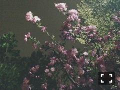
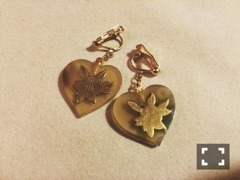
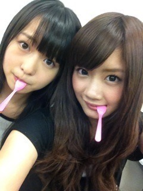
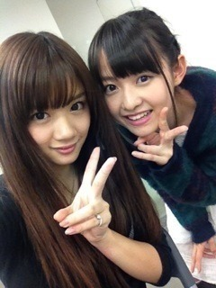

| 2015/04 07 Tue | ぼくの結晶。636回目 |
乃木坂って、どこ？
が来週の放送を持って終了します。
スタジオ収録はこれで最後と聞いて、
もうスタッフさんや
バナナマンさんと会えなくなるな
関係が途絶えてしまうのかな
乃木坂どうなっちゃうのかな
といろいろぐるぐるして
号泣してしまいました、、
一人ひとりの話があまりにも
長くて少しずつしか
放送されなかったけど、
みんなそれぞれ乃木どこに
思い出がたくさんあります。
私自身も後悔したことしか
流れなかったけど、
厳しく優しくしてくださった
バナナマンさん、スタッフさんへの
感謝の気持ちを言いました...
結局どっきりだったけど！！
これからも感謝の気持ちを忘れず
出られることへの意識を高めて、
新番組で頑張っていきます。
自然体にやっていけるように。
よろしくお願いします！！

夜桜〜
アルバム特典
スペシャル個別握手会in名古屋
歌唱衣装で握手会！
1部 バレッタ
2部 あの日 僕は咄嗟に嘘をついた
3部 何度目の青空か？
4部 生まれたままで
全会場で、同じ衣装は着ず
アンダー衣装を全部制覇！
毎度、奇数は表題衣装
偶数はアンダー衣装
と実はきっちりと
バランスをこだわっていた。

最後はやっぱりこれ！
生まれたままでの衣装。
思い入れがある分
着るとしっくりくる、、
そしてだいすきなデザイン。
そして京都個別握手会
11枚目シングルスタートです！
tenusisのスウェット着たよ！
DORAMA〜

ニット used
パンツ used
靴 BELLY BUTTON
最近よくする格好。
自分が男でもこんな服装して
でっかいリュック背負っていたい。
パンツは薄い生地で、
ちょっとプリーツが入ってるの。
この靴ずっと履いて歩いてたら
腰の付け根が痛くなって
めちゃくちゃ運動になる笑
先が尖ってて可愛い。
耳に付けてた物。
可愛いパーツあったから
イヤリングにしたよ。

4部の髪型。
眠そうな顔...
2日続けて来てくださった方が
たくさんいました。
お疲れ様でした！
来てくださったみなさん、
ありがとうございました〜！
部長、釣りサークル帰ってきて！
とたくさんの方に言われた。
帰ってくるのを待っていてください！
4人で船に乗ってやるぜ！

......
せいたんが乃木坂46を卒業しました。
最初同い年というのにお互い驚いた
あまりにも大人び過ぎてて、、
ちょっと怖いなって思ってたの。
でも話したらそんなことなくて、
むしろメンバーの中でいちばん
情に厚くて、優しかった。
すごく心配性で、
めちゃくちゃ自由で素直。
みんなができないことを
さらっとやってのけちゃう所
悪かったらちゃん言ってくれる所
何かあったらすぐに
駆けつけてくるのはせいたんだった。
たくさん助けられました。
ありがとう、ごめんね
を素直に言える人っていいな。
見習わなきゃいけない。
同期の同い年が
卒業してしまうのは寂しい...
でも、せいたんはこれからも
素直に前に進んで欲しい。
がんばれ！！


95年組、3人。
成人式まで上に駆け抜けたい！
まりか
コメント(601)
2015/04/07 00:30